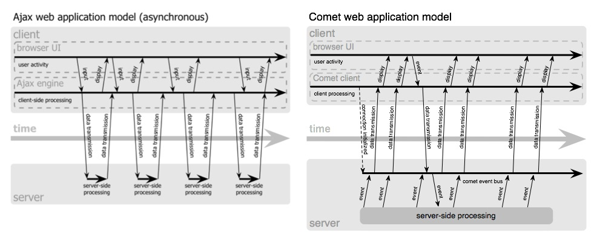
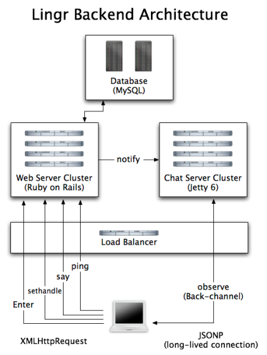

Comet
Low-Latency Collaborative Web Applications
Toby DiPasquale
Is it over yet?
- What is Comet?
- Why do I care?
- How does it work?
- Who's using it now?
- Where can I find out more about it?
In the beginning...
- ...there was HTML
- HTML - HyperText Markup Language
- document-centric
- high latency due to full page loads only
- coarse-grained interactions with the server
- multi-user from the beginning
Next came...
- AJAX - Asynchronous JavaScript And XML
- allowed fine-grained interactions from browser to server
- reduced latency for a lot of client-initiated interactions
- no need for full page load every time
- only pull data for and refresh the parts of the page that required update
- does not provide for server-initiated interactions
Enter, Comet
- COMET - C O M E T
- Not an acronym; just a meme
- allows full bidirectional, asynchronous communication between browser and server
- Term coined by Alex Russell of the Dojo toolkit
- harkens back to the dot-com hooplah about "server push"...
- ...except that Comet is more real than hype
- has nothing to do with PointCast
What is the difference?

So?
- Comet brings multi-user to the low-latency Web
- apps can update all interested parties as things happen
- potential applications include:
- chat
- conferencing
- multiplayer games (10-way live Go Fish action!!)
- auctions
- tickers
- monitoring
- etc
Ok, but how does it work?
- Comet involves using (possibly) new techniques on both the client and server
- different client-side techniques depending on app profile, browser target, etc
- different/upgraded server-side technology required to handle Comet load profile
- let's start with the client-side techniques...
Long Polling
XMLHttpRequest connection is opened back to the server- once server sends, connection is closed and then immediately reestablished
- server can send multiple datagrams in one connection to reduce load
- somewhat higher latency due to connection establishment/teardown
- can have problems dealing with lots of push messages
- good if your app can deal with some lag
Persistent Frame
- incremental rendering in browser evaluates new messages from server
- iframe receives inline script tags from persistent connection
- those tags call function(s) in parent frame to update view
- also called a "forever frame"
- most portable method
- can connect to subdomains, too
- this is the default method these days
Flash
- Flash's
XMLSocket can act as a persistent bridge between browser and server
- can use
crossdomain.xml to do cross-domain calls, too
- proprietary
- can't ensure Flash will be installed/enabled/work right
Multipart XMLHTTP
- persistent connection opened to server (chunked transfer encoding)
- server can then just push data to browser and it will evaluate it as needed
- great method if it will work for your situation
- not portable today
- IE and FF differ (big shocker there)
- Safari does not support this at all
Related Stuff
- JSONP
- JSON with Padding
- used for cross-domain data fetching
- Dynodes
- a proposal to get around some of the XHR brokeness regarding multiple domains
- captures the mouse events and dynamically runs remote scripts when you click on objects tagged specially
What about the server?
- must be able to sustain large numbers of long-lived connections
- basically will end up looking a lot like a message bus
- lots of servers are implementing COMETd
- Examples:
Oh the Scale...
- Comet will require handling tons of concurrent connections
- lots of those connections will be idle at any given time
- processes and OS-level threads don't scale to the numbers of sockets Comet apps will need
- newer multiplexing techniques can handle the load: epoll(4), kqueue(2), Solaris' /dev/poll and ports, etc.
- Erlang has been taking one for the team on this point for over 20 years
COMETd
- combination of server, protocol and JavaScript libraries
- being implemented by lots of projects
- Grizzly
- Twisted
- Jetty
- Perl cometd
- Bayeux is their JSON-based protocol for event pub/sub
- hopefully will make it much easier to get a Comet app developed and deployed
Its not all wine and roses
- may require multiplexing logical services down the same physical connection
- may require some DNS hacks to get multiple domains working together
- browsers are just now coming to grips with AJAX apps
- lots of code may load and run slowly
- can cause stability issues and crashes
- can leak memory
- intervening proxies will snap off long-idle connections
- have to "recycle" connections periodically
Who is using it?
- A bunch of apps, actually:
- GTalk in GMail
- GDocs (formerly Writely)
- Renkoo
- cgi:irc
- Meebo
- KnowNow
- JotLive
- Lingr
- NOT Campfire
- they are just polling really often
- Lets take a quick look at how Lingr does Comet
Lingr
- Lingr is a Web 2.0, realtime chat application with some community features
- they use a Comet-based architecture to pull this off
- even have an API and everything
- really open with the backend process on their blog
Lingr Architecture v1
- main Web platform is Ruby on Rails
- use persistent frame style of Comet (dynamic
<script> tags and JSONP)
- all requests first shunted to a Jetty cluster
- Jetty 6 Continuations allow them to keep track of connection state between events
- persistent connection to the Jetty cluster for real-time updates
Lingr Architecture V2
- But, this had some trouble
- previously, all requests went through Jetty
- in V2, only the Comet-required requests went through Jetty (
observe)
- all others went directly to Rails cluster
- this relieved load on the Jetty cluster but had to implement notifications between Rails and Jetty clusters to keep in sync
Lingr Architecture Now

Uh, are you finished yet?
- Comet holds a lot of promise for bringing real-time collaboration to the Web
- some kinks left to be worked out on the browser side
- new expectations of load and load profiles on the server side will force more scalable server technologies
- plus, we users get cool new apps
Thanks!
Thanks for coming!
Questions?